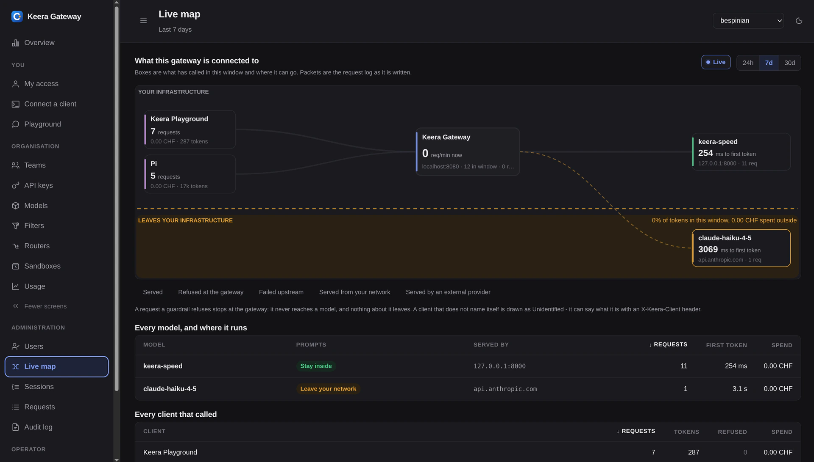

Keera Gateway
Ein Endpunkt für jedes Modell im Unternehmen
Zwischen deinen Teams und jedem LLM steht eine Base-URL: Keera-Modelle, deine eigenen Fine-Tunes und externe Anbieter, wo die Policy es zulässt. Policies, Budgets und Audit an einem Ort.

Wie es läuft
Alles, was bei dir ein Modell aufruft, zeigt auf dieselbe Adresse. Das Gateway prüft jede Anfrage, schreibt sie ins Protokoll und schickt sie weiter.
Deine Tools
- Coding Agent im Terminal und in der IDE
- Interne Apps und Copiloten
- Notebooks und CI-Jobs
Keera Gateway
- Identität und Team aus deinem IdP
- Policy, Quota und Budget prüfen
- Secrets und Personendaten schwärzen
- An das erlaubte Modell routen
Modelle
- Offene Modelle auf Keera Engine in der Schweiz
- Deine Fine-Tunes und On-Prem-Cluster
- Externe Anbieter, per Policy freigegeben
Jede Anfrage ins Audit-Log und in dein SIEM
OpenAI-kompatibel: bestehende SDKs und Agenten wechseln mit einer Umgebungsvariable.
Vier Dinge, die es kontrolliert
Ein Endpunkt, der dir gehört - und vier Entscheide, die er für jede einzelne Anfrage trifft.
Schluss mit Shadow AI
Blockiere den direkten Egress am Proxy, und jede KI-Anfrage im Unternehmen wird sichtbar.
Policy pro Team
Welche Modelle, Repos und Datenklassen erreichbar sind, steht in einer versionierten Policy - durchgesetzt pro Anfrage.
Kosten, die du zuordnen kannst
Ausgaben nach Team, Repo und Kostenstelle, mit harten Budgetgrenzen und Alarm vor der Rechnung.
Audit und Redaction
Secrets und Personendaten fallen am Edge raus. Prompt, Modell, Entscheid und Identität gehen unveränderlich in dein SIEM.
Web-UI oder CLI, dieselbe Kontrolle
Du verwaltest das Gateway über eine aufgeräumte Web-UI: Policies, Budgets, Teams, Modelle und jede einzelne Session sind ein paar Klicks entfernt. Wer lieber tippt oder automatisiert, nimmt die keera CLI - gleicher Funktionsumfang, skriptbar und reif für deine Pipeline. Beide Wege schreiben dieselbe versionierte Policy: was du im Browser klickst, liest die CLI - und umgekehrt.
Und weil jede Anfrage über denselben Endpunkt läuft, siehst du zum ersten Mal, was dein Unternehmen mit LLMs wirklich tut: Tokens, Kosten und abgelehnte Anfragen pro Team, Modell und Zeitraum - im Browser oder als CSV für deine eigenen Auswertungen.

Features
Das Gateway ist mehr als ein Proxy. Hier sind einige seiner stärksten Features - jedes davon in der Web-UI und in der CLI.
Guardrails
Erlaubte Modelle, Rate Limits und Budgets - pro Organisation, Team und Schlüssel. Versioniert, bei jeder Anfrage geprüft, im Zweifel abgelehnt.
Smart Filters
Ein kleines Modell liest jede Anfrage und nimmt Secrets, Kundennamen und Personendaten heraus - oder stoppt sie. Erst im Schattenmodus messen, dann scharf schalten.
Smart Routers
Ein kleines Modell wählt, welches Modell antwortet: das schnelle lokale für kurze Edits, das grosse nur, wenn die Aufgabe es braucht.
Live Map
Clients, Gateway und Modelle als Bild, mit einer Linie quer durch: darüber bleibt es im eigenen Netz, darunter verlässt es das Haus. Anfragen laufen live darüber.
Agent Sandboxes
Das Gateway bietet Coding Agents isolierte Container - als Entwicklungsumgebung oder für die CI-Pipeline. Darin erreichen sie nur, was sie wirklich brauchen.
SSO und Rollen
Anmeldung an deinem eigenen Identity Provider, Rechte aus deinen Verzeichnisgruppen. Jede Änderung steht im Audit-Log.
Häufige Fragen
Das fragen uns Teams am häufigsten, bevor sie das Gateway aufsetzen.
Speichert ihr meine Prompts?
Nein. Weder der Prompt noch die Antwort des Modells wird gespeichert - der Inhalt läuft durch und ist danach weg. Festgehalten wird die Anfrage selbst: wer, wann, welches Modell, wie viele Tokens, welcher Entscheid. Genau daraus entstehen die Kosten pro Team und der Nachweis, und das Log liegt in deiner Infrastruktur.
Macht uns das Gateway sicherer?
Ja, vor allem über die Schlüssel. Die API-Schlüssel für alle Modelle liegen an einem Ort statt verstreut in .env-Dateien, CI-Secrets und auf Laptops. Du gibst sie pro Team frei und ziehst sie an einem Ort zurück. Deine Anwendungen bekommen den echten Schlüssel nie zu sehen.
Hilft es mir beim EU AI Act?
Ja. Der AI Act verlangt, dass du belegen kannst, was dein Unternehmen mit KI tut. Das Gateway protokolliert jede Anfrage mit Identität, Modell und Entscheid und zeigt dir Nutzung und Kosten pro Team. Die Belege sind da, wenn jemand fragt. Die Compliance-Arbeit bleibt deine.
Wie unterscheidet es sich von anderen AI Gateways?
Routen können andere auch, und als Open Source kostet das nichts. Drei Dinge kommen dabei nicht mit. Wir betreiben das Gateway in Schweizer Rechenzentren, du bekommst Enterprise-Support direkt von uns mit einem Ansprechpartner in der Schweiz, und die Keera-Modelle stehen vom ersten Tag an dahinter. Dafür braucht es keinen eigenen Client und keine eigene Library: deine Tools sprechen weiter die APIs, die sie schon sprechen, und du änderst eine Base-URL. Das hält dich unabhängig - auch von uns.
Läuft Claude Code damit?
Ja. Das Gateway spricht die OpenAI- und die Anthropic-API. Claude Code, dein eigener Agent, eine interne App oder ein Notebook zeigen auf die Base-URL des Gateways und laufen weiter wie vorher.
Kostet das Latenz?
Sehr wenig. Der Weg durch Policy, Budget und Log kostet Mikrosekunden - neben einer Modellantwort, die Sekunden dauert, fällt das nicht auf. Nur wer Smart Filters oder Smart Routers einschaltet, kauft sich den kleinen Modellaufruf bewusst dazu.
Ist es leichtgewichtig?
Ja. Es braucht sehr wenig Arbeitsspeicher und ist schnell. Keine schwere Laufzeit, keine Datenbank-Farm davor - du stellst es neben deine Anwendungen, ohne dafür eine eigene Plattform zu bauen.
Ist es cloud-native?
Ja, Cloud und Kubernetes sind sein Zuhause. Es läuft als Container, skaliert horizontal und nimmt seine Konfiguration aus dem Cluster. In deiner Cloud, in deinem Cluster oder im eigenen Rechenzentrum ist es dieselbe Software.
Keera testen
Wir onboarden ein Team, verbinden es mit deinen Repos und zeigen dir die Zahlen. Nach 30 Tagen entscheidest du.